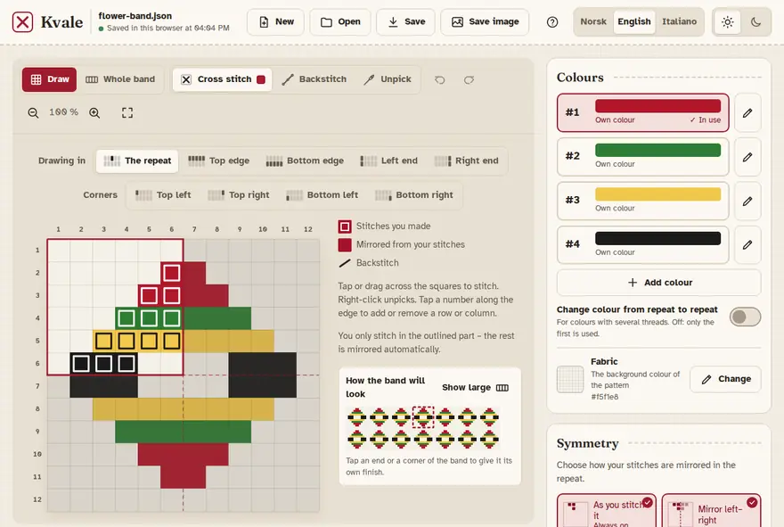
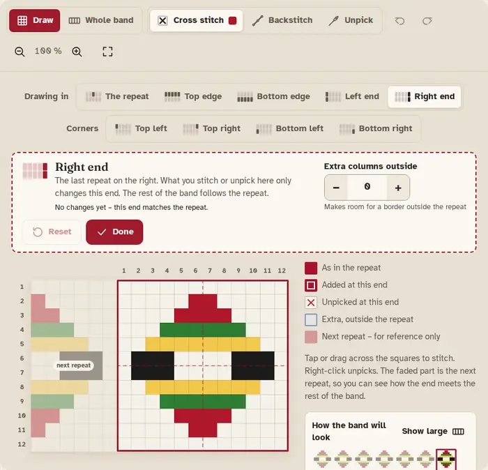
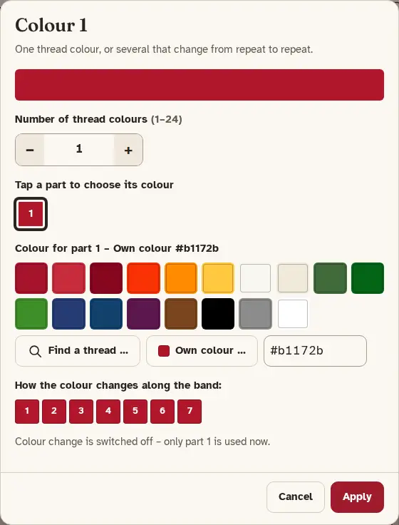
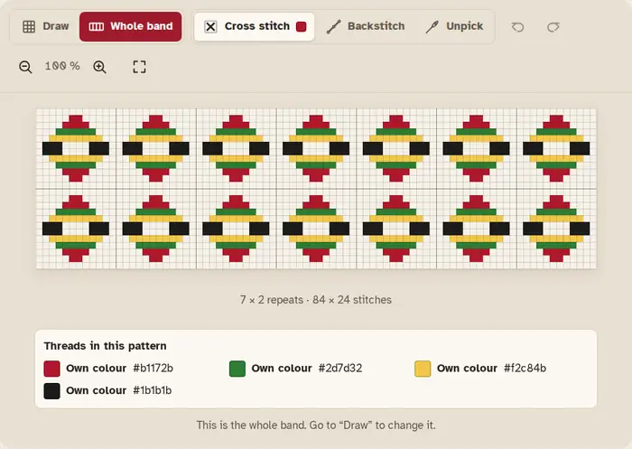

How to use Kvale
Kvale helps you draw cross-stitch bands for the bunad. You stitch a small part, and Kvale mirrors it and repeats it into a whole band.
Getting started
Kvale runs in your web browser. The first time it takes a few seconds to get ready; after that it is quicker.
- In the middle is the repeat: the area you draw in. It repeats across and down the band.
- On the right are Colours, Symmetry and Repeat and size.
- At the top are New, Open, Save and Save image, the language and light or dark look, and Help (?), which opens this guide.
- Draw and Whole band switch between drawing and seeing the finished band.

Drawing in the outlined part
Choose Cross stitch and a colour, then tap or drag across the squares to stitch.
- When a symmetry is on, a part of the repeat is outlined. You only stitch there – the rest is mirrored automatically.
- Stitches you made have a frame. Stitches mirrored from yours are filled in.
- To remove stitches, choose Unpick and tap them. With a mouse you can also right-click.
- Undo and Redo are the curved arrows (Ctrl+Z and Ctrl+Y).
- Zoom with the magnifying glasses. Fit shows the whole pattern on screen.
The small band under the legend shows how the band will look while you draw.
Symmetry
Under Symmetry you choose how your stitches are mirrored in the repeat. You can switch on several at once; they work together.
- As you stitch it is always on.
- Mirror left–right and Mirror top–bottom copy your stitches to the other side.
- Turn 180° turns them around the middle.
- Turn 90°, Turn 270° and the diagonal mirrors need a square repeat. If the repeat is not square, Kvale offers a button to make it square.
Under Where repeats meet (in Repeat and size) you choose whether an outer row or column is stitched in every repeat or shared by two neighbouring repeats.
Ends and corners
A band often has its own finish at the ends. Choose the end in the Drawing in bar (Left end, Right end, Top edge, Bottom edge) or tap it in the small band.
- What you stitch or unpick there only changes that end. The rest of the band follows the repeat.
- The faded part is the next repeat, so you can see how the end meets the rest of the band.
- Extra columns outside or Extra rows outside make room for a border outside the repeat.
- Done takes you back to the repeat. Reset removes every change in that end – it asks first, and you can undo it.

Corners
Where two ends meet there is a corner (Top left, Top right, Bottom left, Bottom right). A corner starts out as its two ends make it, and then you can give it its own finish. Its size follows the extra rows and columns of the ends beside it.
Backstitch
- Choose Backstitch.
- Tap a corner of a square to start, then the next corner to stitch a line.
- The line carries on from the last point, so you can stitch several lines one after the other.
- To stop: press Esc, tap the last point again, or choose another stitch.
To remove a backstitch line, choose Unpick and tap the line. Backstitch is mirrored like cross stitch, and you can also use it in ends and corners.
Colours and DMC threads
Under Colours, tap a colour to stitch with it (or press 1–9). The pencil opens the colour so you can change it. Add colour adds a new one.
- Find a thread … lets you search DMC threads by number or name, for example 321. Threads are always shown with their brand, as “DMC 321”.
- Own colour … lets you choose any colour.
- Screen colours are approximate. Check against a shade card when the colour must match.
Colours that change from repeat to repeat
One colour can have several thread colours that take turns along the band. Raise Number of thread colours and tap each part to choose its colour. Switch on Change colour from repeat to repeat to use them; when it is off, only the first is used.

Fabric is the background colour of the pattern.
Rows and columns
- Tap a number along the edge of the grid to add a row or column next to it, or to remove it.
- Or use Add or remove a row/column … under Repeat and size.
- With a symmetry on, Kvale may change more than the one you chose, so the pattern stays the same. It tells you before you apply.
- Width and Height set the size of the repeat; Number of repeats sets how many times it repeats across and down.
Saving, opening and images
- Save downloads the pattern as a file (.json) that you can keep and open again (Ctrl+S).
- Open opens such a file (Ctrl+O).
- New starts a new pattern. If there are changes not saved to a file, Kvale asks first.
- Save image downloads the whole band as a picture (PNG), with backstitch, ends and the list of threads.

Saved by itself
Your work is saved automatically here in the browser, and the pattern opens again the next time you come back. At the top it says when it was last saved.
The browser copy only lives in this browser on this device, and it disappears if the browser data is cleared. Press Save to get a file you can keep.
Install and use offline
After your first visit Kvale also works without the internet – everything it needs is kept in the browser. You can install it so it opens like an app:
- Chrome or Edge (computer or Android): press Install app at the top, or use the install icon in the address bar or the browser menu.
- iPhone and iPad (Safari): tap Share, then “Add to Home Screen”.
- Safari on a Mac: File → “Add to Dock”.
When a new version of Kvale is ready, a message says so. Press Reload to use it; your work is kept.